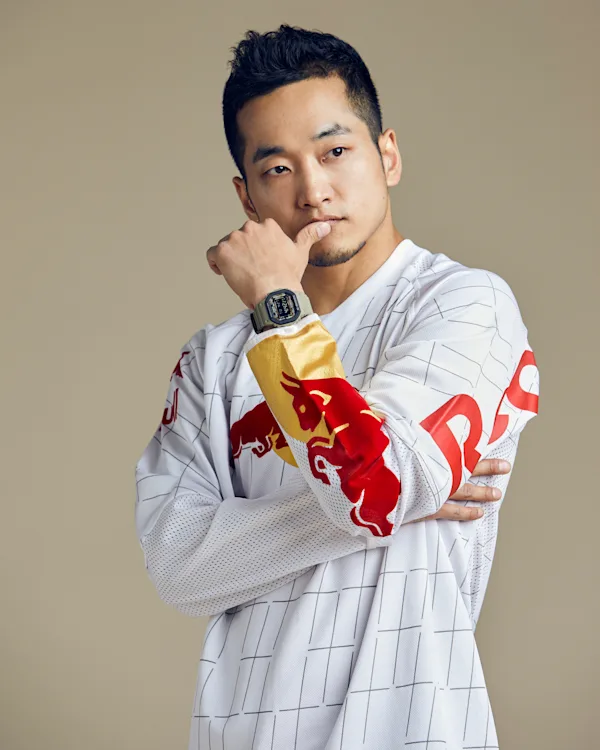

Born and raised in Seoul, South Korea, three-time Red Bull BC One champion Kim Hong-Yul, aka Hong 10, has achieved legendary status on the worldwide breaking scene.
A member of 7 Commandoz crew, Flow XL, and Red Bull BC One All Stars, Hong 10 earned his iconic reputation through unbelievable, competitive performances, and an ability to constantly innovate moves within breaking.
Hong 10 was inspired to start breaking in 1998, at the age of 13 years old, when he saw a friend practising the dance and believed that he was also capable of doing it.
Hong 10 earned his legendary status through years of standout, highlight reel performances in solo competitions and crew battles, winning championships all around the world. His proudest solo victories are his three Red Bull BC One Championship titles.
